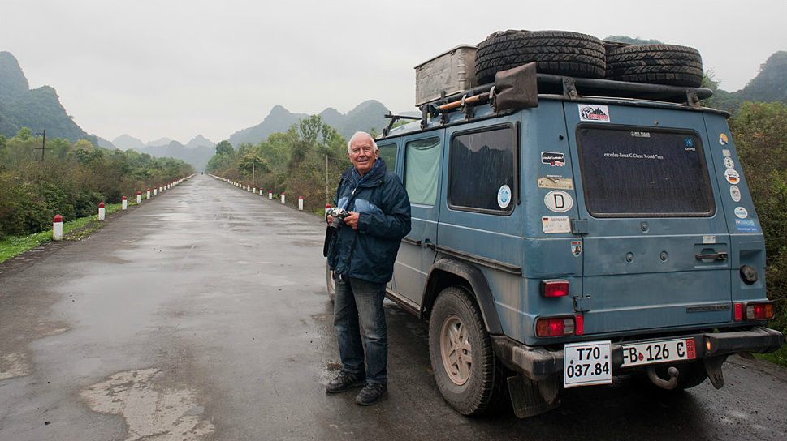
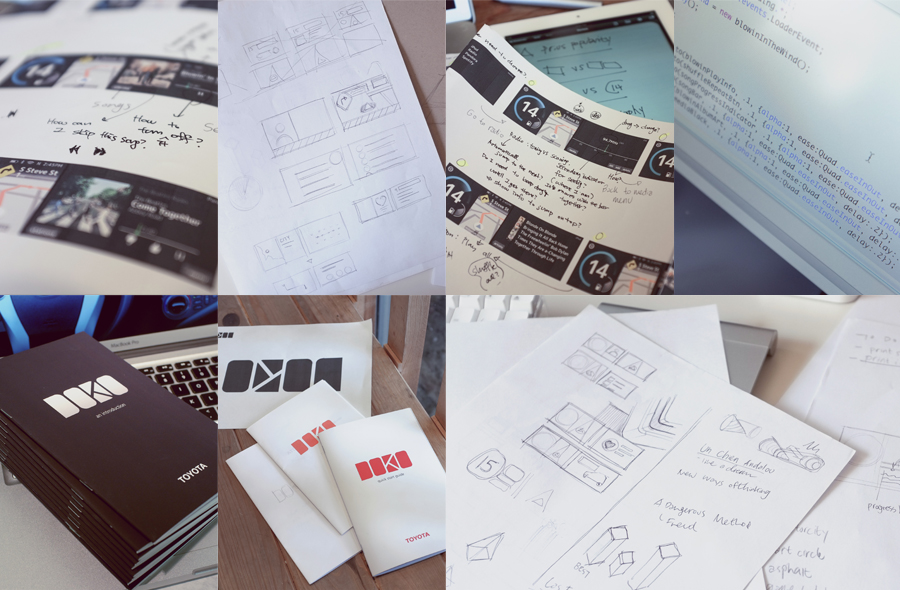
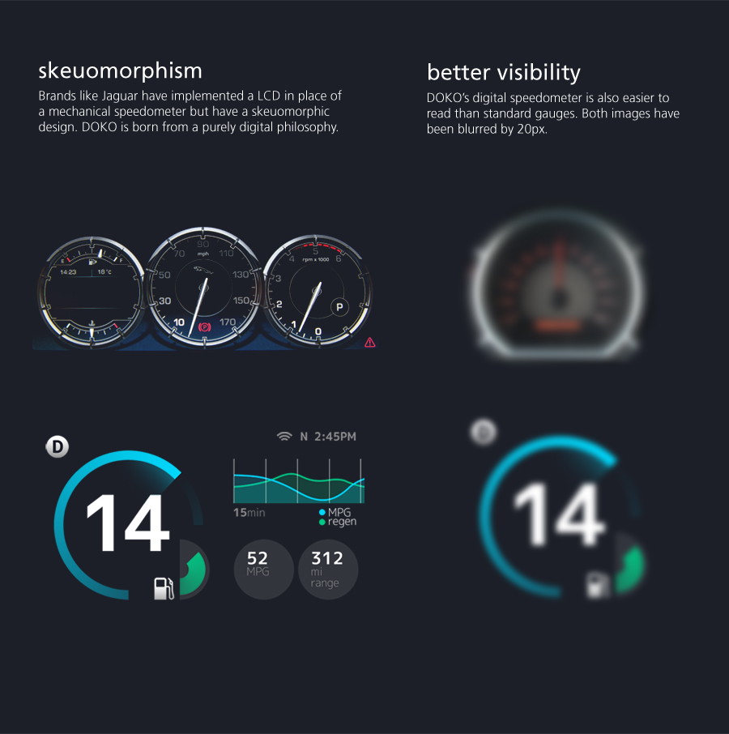
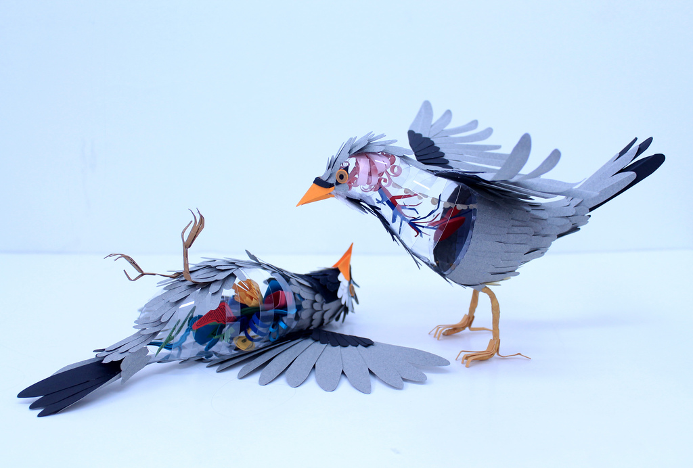

July 2012
07/25/2012 13:41:14
¶
●

23 Year Road Trip
In what started out as a 18 month tour of Africa after the Berlin wall fell in 1989 turned into a 23 year journey for Gunther Holtorf, his wife and their Mercedes Benz G Wagon named “Otto”. In total “Otto” has taken them over 500,000 miles (without a breakdown) across almost every continent, to remote islands thanks to freight ships, and even off-limits countries like North Korea, Cuba and Iraq.
BBC News has an excellent video story of what might be the world’s most traveled man.
#culture #travel #photography #story
07/23/2012 13:36:19
¶
●
ISS At Night
Using NASA’s photography of earth, Knate Meyers removed noise, edited individual shots in Photoshop and compiled all of them in Sony Vegas. The footage is stunning and awe-inspiring.
#space #science #earth #photography
07/23/2012 11:52:42
¶
●
Art is a product and design is a process. Design is the foundation of all the arts.
Paul Rand, via @JESS3
#design #art
07/23/2012 11:36:00
¶
●


Toyota Doko
An exercise by Andrew Kim in industrial and interface design for Toyota’s next generation Prius navigation system. The entire exploration was well thought out and full of great UX ideas.
#design #cars #toyota #industrial #interface
07/09/2012 12:12:14
¶
●
What is Dead May Never Die
An animated but brief history of retro design and technology by Kadavre Exquis.
#design #motion #technology #animation
07/05/2012 16:08:17
¶
●
We don’t do focus groups - that is the job of the designer. It’s unfair to ask people who don’t have a sense of the opportunities of tomorrow from the context of today to design.
Jonathan Ive, March 2012
#design #future
07/05/2012 15:48:41
¶
●

“Disecciones”
Discovering what makes paper birds tick. Cut paper and vinyl film by Colombian artist, illustrator and paper sculpture Diana Beltran Herrera. View more of Diana’s work on Flickr
#art #paper #nature #birds
07/05/2012 15:21:17
¶
●
“Kinetic Rain”
608 rain drops made of aluminum covered in brass, synchronized and dancing above Terminal 1 of the Singapore Airport. Created by ART+COM
#art #installation #singapore
Index